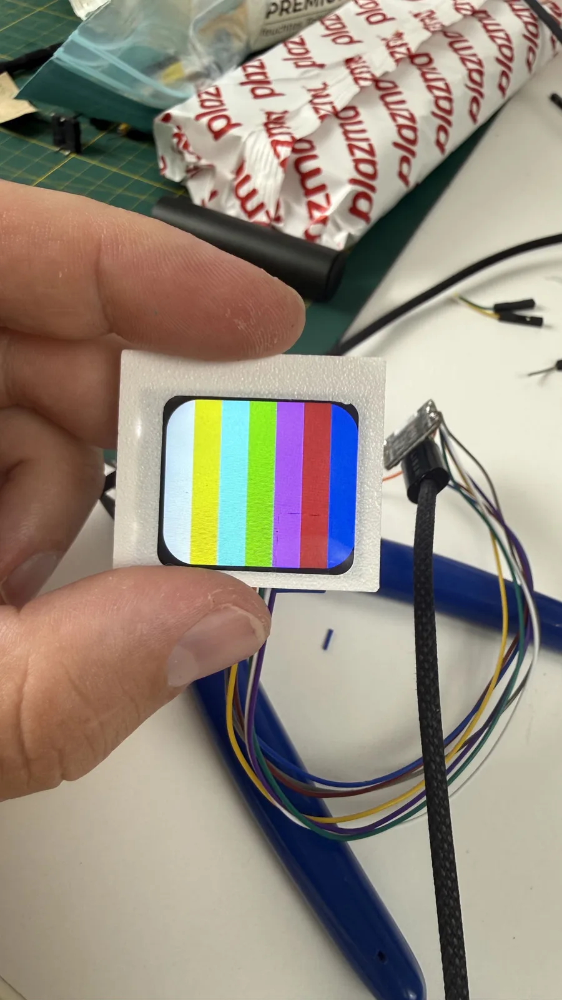
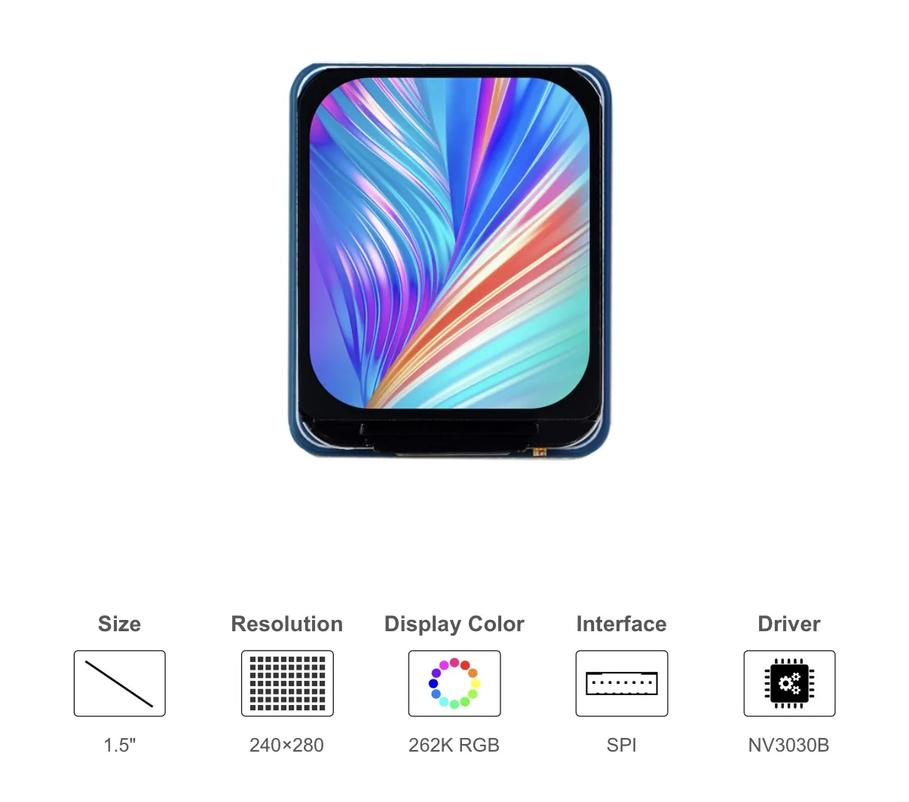
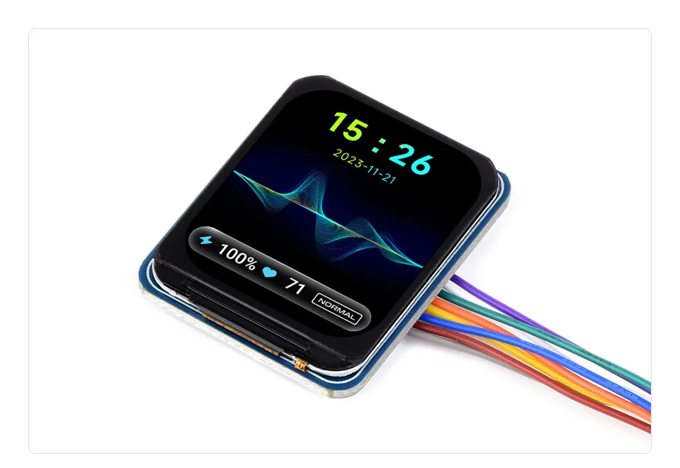

← all notes
20.08.2026#slider #electronics
I wrote below about frying the slider. The replacement board never showed up, even though I was really waiting for it — so I had to figure out what to do next.
I didn't want to start a big new project or switch direction entirely (going back to LEGO, say, which I'm not quite ready for). Then I remembered an unfinished project — a companion not just to the slider, but to shooting in general.
The idea was a single remote to control everything on set: lights, motorized dollies, and the cameras themselves (i.e. phones). I've dropped the lights part — I rarely need to fire it in sync with a shot. But starting a dolly or slider together with the recording, and stopping everything with one button, is genuinely useful.
Also, controlling the slider by hand is just awkward: every touch shows up on camera, especially in macro shots, where you want the camera to start moving smoothly on its own.
I already had a XIAO ESP32 set aside for this project — a tiny module whose main advantage is out-of-the-box battery support, no extra boards needed. So a small compact device gets both USB and battery power for free. Not a lot of pins, but should be enough for buttons and a screen.
Speaking of the screen — while restocking components to replace the fried ones, I remembered I'd bought this Waveshare display about six months ago, and it seemed like a good fit for this project.
Tested it with a sample sketch — looks great.
And a couple of bonus photos from the Waveshare page — what the module actually is: 1.5", 240×280, IPS, 262K colors, SPI, NV3030B driver.
I didn't want to start a big new project or switch direction entirely (going back to LEGO, say, which I'm not quite ready for). Then I remembered an unfinished project — a companion not just to the slider, but to shooting in general.
The idea was a single remote to control everything on set: lights, motorized dollies, and the cameras themselves (i.e. phones). I've dropped the lights part — I rarely need to fire it in sync with a shot. But starting a dolly or slider together with the recording, and stopping everything with one button, is genuinely useful.
Also, controlling the slider by hand is just awkward: every touch shows up on camera, especially in macro shots, where you want the camera to start moving smoothly on its own.
I already had a XIAO ESP32 set aside for this project — a tiny module whose main advantage is out-of-the-box battery support, no extra boards needed. So a small compact device gets both USB and battery power for free. Not a lot of pins, but should be enough for buttons and a screen.
Speaking of the screen — while restocking components to replace the fried ones, I remembered I'd bought this Waveshare display about six months ago, and it seemed like a good fit for this project.
Tested it with a sample sketch — looks great.

And a couple of bonus photos from the Waveshare page — what the module actually is: 1.5", 240×280, IPS, 262K colors, SPI, NV3030B driver.


Comments